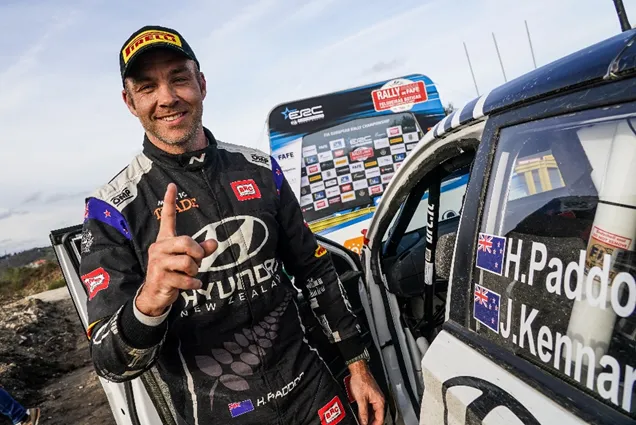
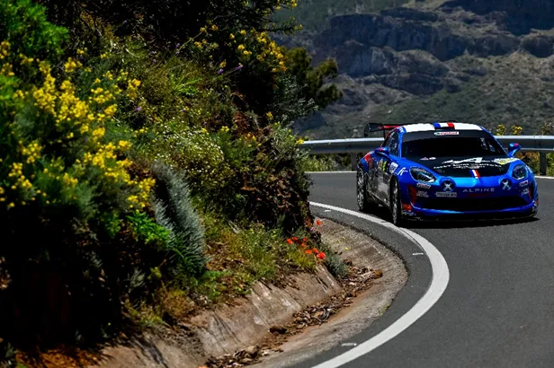
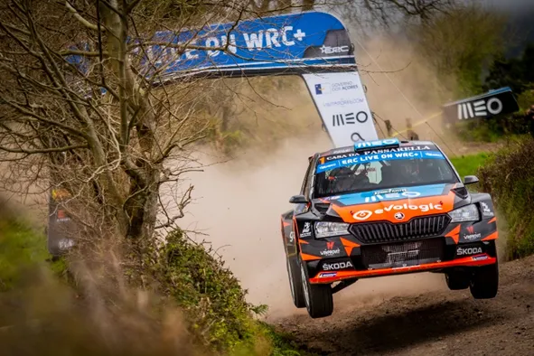
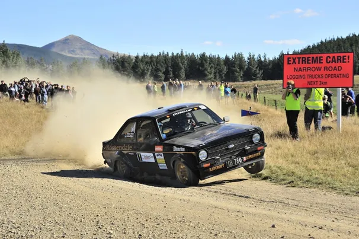
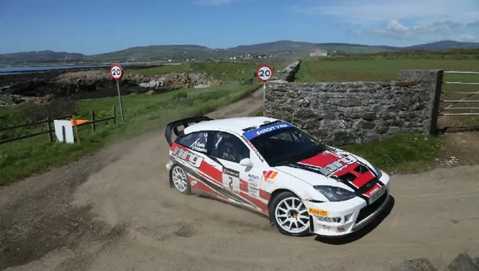
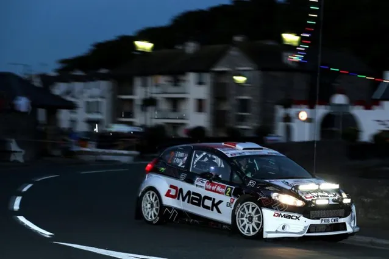
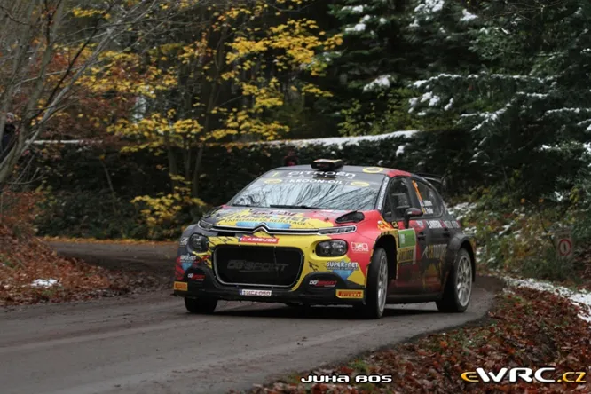
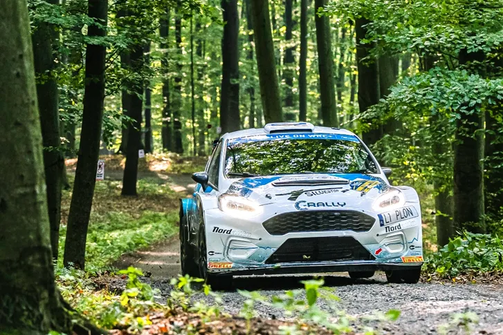
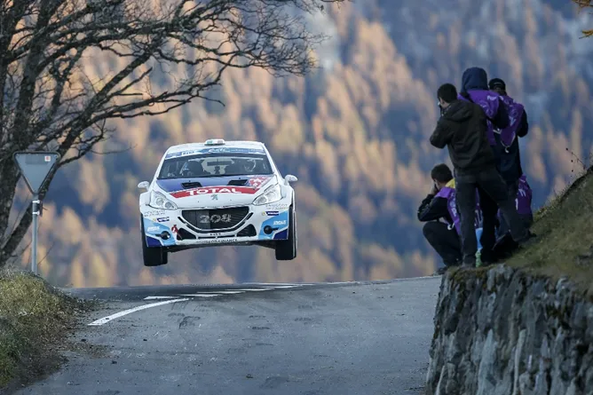

7 of the best rallies not to have hosted a WRC Event
The ERC returns next week with Rally Islas Canarias, in Spain. It’s the 2nd round of the championship, with the season opener leaving us all excited for the upcoming rallies.
Hayden Paddon won in Fafe and is the championship leader heading to the Canaries.
Rally Islas Canarias has been a prominent feature in the ERC calendar, having first been ran in 1982, over 40 years ago, as the Rally El Corte Ingles. What’s really interesting to note, is that despite being a rally with a long history in the ERC and IRC, it has never hosted a round in the WRC. So that got us wondering, what are some other rallies that are super good, but haven’t had the privilege of hosting a round in the World Rally Championship?
1. Rally Islas Canarias – Spain - Tarmac

It would be rude not to start with the rally that is the reason why I am making this, wouldn’t it. The islands in the Atlantic have never hosted a WRC rally, with Catalunya being the preferred Spanish destination for the World Rally Championship. It’s a shame, because the roads there are amazing. Very nice fast and flowing cambered tarmac roads. And the backdrops are iconic, with the stages going through picturesque mountains, with massive cliffs on the other side. The armcos are really a life saver for the drivers here, as Jon Armstrong found out last year. A drawback of the location, is that is in the middle of nowhere, closer to the west coast of Africa than continental Europe. That means it comes with higher shipping costs for the crews which also means it is likely to get less entries compared to rallies in the mainland, like Catalunya. The Rally was also given a “yellow card” by the FIA in 2021 deeming the rally as unsafe, and was dropped from the 2022 Spanish Superchampionship. Also a problem is that since the rally is held at a single island, the organizers are quite limited at the amount of stages they can have, which means a 300km rally would be difficult.
2. Azores Rallye – Portugal – Gravel

Azores is in a very similar situation with Islas Canarias. It is a fantastic and unique rally that unfortunately has never hosted a WRC rally, because Rally Portugal, which is hosted in Fafe, is already an event with rich history in the sport’s top level. Another similarity with the Canaries, is that the rally is really expensive for the crews (even more than Islas Canarias infact) as Azores is in the middle of the Atlantic Ocean, making the trip there a very expensive one for the teams. That’s why it was dropped from the ERC calendar this year (a crime in my opinion), to make the calendar cheaper for the drivers. The rally in itself is a gravel rally that combines New Zealand and Indonesia. The scenery is really reminiscent of a South-East Asian event, with the forests in the island looking more like jungles than forests. There’s even a stage passing by an active volcano! (Sete Cidades) The rally is also usually a mud fest, as heavy rain and fog is common in the Azores in late March, when the event is usually held. Despite the fact that Azores wasn’t on the ERC calendar this year, the rally attracted big names such as Sebastien Loeb and Andreas Mikkelsen, which is a testament to the uniqueness and quality of the rally
3. Otago Rally – New Zealand – Gravel

I have to be honest; I didn’t know much about this rally before DirtFish picked up its promotion for 2022, and I feel a bit guilty for it. The Otago Rally is incredible. Again, similarly to the first 2 rallies, there’s a good reason why it hasn’t been a WRC event, Rally New Zealand is a legendary rally and one of the highlights of the championship (or used to be anyway). The Otago Rally is held in the South Island of New Zealand as opposed to Rally NZ which is based in Auckland on the North Island. The stages in the south don’t have the amount of camber that the stages in the north are known for, but they’re super-fast and they have an incredible flow. The rally is so good in fact that it has attracted big names, like Mikko Hirvonen, Juha Kankkunen, Michele Mouton, Didier Auriol, Hanu Mikkola, Bjorn Waldegard and Markko Martin. Mikko Hirvonen, who contested the event this year, made a bold statement, saying that the Otago Rally stages are better than the ones in his home rally in Finland! If you are have a soft spot for videogames like myself, you can try the Kuri Bush stage, one of the most famous of the event, in Richard Burns Rally. Download it for free from Rallysimfans on this link.
4. Manx Rally – United Kingdom – Tarmac

It is an absolute shame that the WRC hasn’t been in the United Kingdom since Wales Rally GB in 2019. And unfortunately, the wait for the return of a rally in the UK will probably be long, as the Rally Ireland bid failed in 2022, and 2023 looks like it’s going to be the same. But if the WRC can’t return to Wales, I’d like to see an event held at the Isle of Man. Rally Manx uses roads that are also used in the TT Isle of Man motorcycle race. The stages are high speed tarmac, with the average speed in 2018 being 113.6 km/h. Lots of high-profile drivers have taken the ferry for Douglas. How high profile? Try Colin McRae, Ari Vatanen, Henri Toivonen, Richard Burns, Roger Clark, Tony Pond, Malcolm Wilson, Walter Rohrl, Stig Blomqvist, Hannu Mikkola and Mark Higgins.

Elfyn Evans won in the Isle of Man in 2016
Despite Manx being this famous in the world of rallying, the small island has never hosted a WRC event. This is likely to remain the case in the future as it hasn’t hosted a BRC rally since 2017 and an ERC rally since 1996. But even if it never hosts one, it will still live in every rally fan’s memory for this Ari Vatanen moment in 1983.
5. Spa Rally / Boucles De Spa - Belgium – Tarmac

Ok this is technically cheating, because Ypres Rally in 2021 did go to Spa on the final day, but it was 2 repeated stages and they went into the Spa Francorchamps circuit so it doesn’t count in my opinion, as we didnt get a proper feel of the stages in the area. I think a rally in the Boucles de Spa/Spa region (maybe Condroz too if the fans decided to not be idiots for once). I really love the dirty tarmac roads with the odd gravel (mud most of the time) section in between. The stages look quite similar to last week’s Rally Croatia, with the road becoming polluted after the first pass, and the roads becoming quite muddy and slippy when in the forest. Boucles de Spa was a long time ERC event, having first hosted an ERC rally in 1976. Spa was the finale of the Belgian Rally Championship in December last year, with some snow making a cameo on the first day. If the WRC was to return to Belgium, Ypres would probably be the place they'd go to, but that doesn't take anything away from how good the stages around south Belgium are.
6. Barum Rally Zlin- Czech Republic – Tarmac

It’s quite mad to think that one of the best (if not the best) tarmac rally in the world has never been in the WRC calendar. Barum Rally Zlin is pretty much synonymous with the European Rally Championship, being in the calendar from 1984, to today without a break. It has fast, low-grip bumpy tarmac. The roads are narrow and dirty and there’s likely to be changeable conditions as the event is usually held in late August/early September which is the start of Autumn. I can understand why it’s not in the WRC nowadays as the stages are too dangerous for today’s Rally1 cars, with any off likely to be a major high speed one (see Llarena last year in the Skoda). Thankfully for the Czech fans, their country will co-host a rally for the first time, as Day 1 of the Central European Rally, will be held in the Czech Republic
7. Rallye Du Valais – Switzerland – Tarmac

Rallye du Valais was also a classic of the ERC calendar having first joined the calendar in 1979. The rally is held in the Alps, on the southern parts of Switzerland. There’s a variety of roads, with Monte Carlo and San Remo-esque stages the more prominent, but there’s also stages that look like they’re from Rally Croatia or the Janner Rallye in Austria. It’s not uncommon for an odd gravel section up in the mountains. The rally is known for it’s jump on the Veysonnaz stage where there’s a steep uphill and road goes from narrow to wide, leading to the jump in the picture.
Are there any rallies you think should host a WRC rally?
Let us know in the comments
All pics are from the Red Bull Content Pool